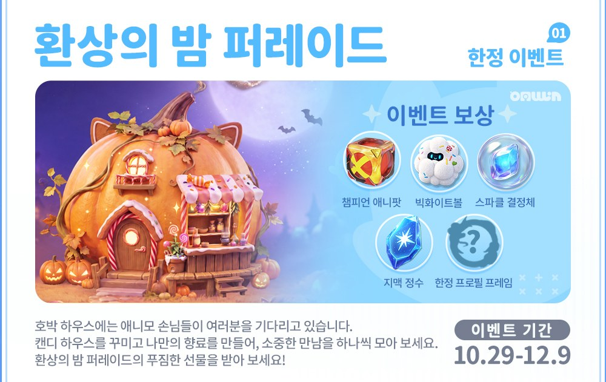
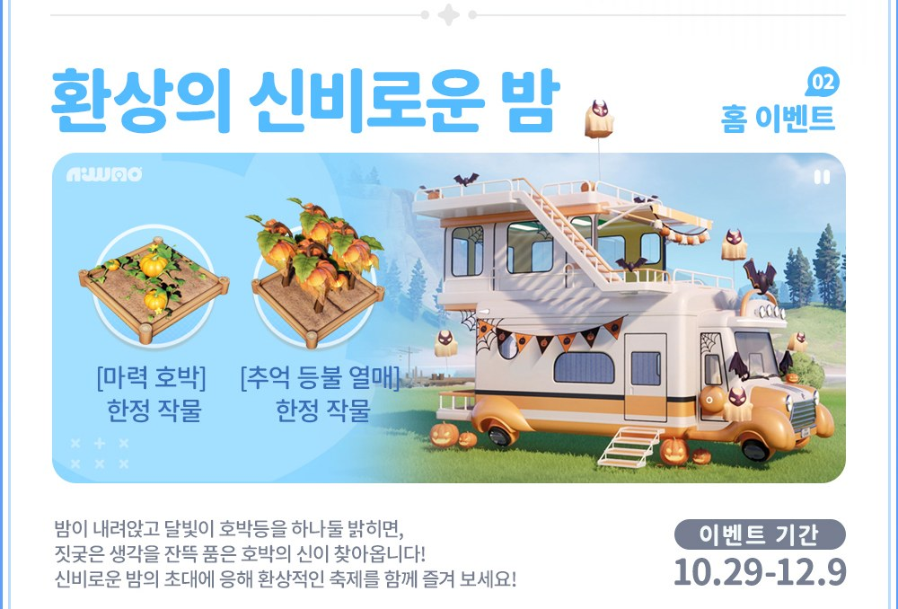

애니모 환상의 밤 퍼레이드 보상 5종, 10.29~12.9 받는 기간
10월 16일에 올라온 공식 공지를 10월 27일에 열어 보니, 10월 29일 업데이트로 한정 이벤트 「환상의 밤 퍼레이드」가 들어온다고 되어 있더라고요. 그림 한 장에 보상 다섯 가지가 쭉 적혀 있는데요, 애니모 환상의 밤 퍼레이드에서 뭘 받는지 그리고 언제까지 받을 수 있는지를 먼저 정리해 봤습니다. 보상 하나하나가 포획이나 육성 어디에 쓰이는지까지 같이 묶었어요.

이미지 출처: 애니모 공식 공지(10월 16일 게시, 10월 27일 확인) · 네이버 본문엔 받아서 재업로드 권장
애니모 환상의 밤 퍼레이드 보상 5종과 받는 기간 한눈에
환상의 밤 퍼레이드는 10월 29일부터 12월 9일까지 이어지는 한정 이벤트이고, 보상은 챔피언 애니팟·빅화이트볼·스파클 결정체·지맥 정수·한정 프로필 프레임 다섯 가지예요. 표로 옮겨 봤어요.
| 보상 | 어디에 쓰나 |
|---|---|
| 챔피언 애니팟 | 포획 시 반드시 성공 |
| 빅화이트볼 | 애니팟 계수 ×2, 생태 육성으로 모여든 애니모에겐 ×6 |
| 스파클 결정체 | 공지 그림에 설명이 없어요 |
| 지맥 정수 | 천휘 육성에 사용 |
| 한정 프로필 프레임 | 공지 그림에 설명이 없어요 |
기간은 10월 29일부터 12월 9일까지예요. 마감 날 당일보다는 그 전주쯤 미리 챙겨 두는 쪽이 마음 편해요.
환상의 밤 퍼레이드는 어떤 이벤트인가요
환상의 밤 퍼레이드는 호박 하우스에서 애니모 손님을 만나고, 캔디 하우스를 꾸미고 나만의 향료를 만들며 퍼레이드 선물을 받는 한정 테마 이벤트예요. 공지 그림 소개는 이렇게 적혀 있어요. 호박 하우스에는 애니모 손님들이 찾아와 기다리고 있고, 캔디 하우스를 꾸미는 일과 나만의 향료를 만드는 일이 각각 안내돼 있고, 소중한 만남을 하나씩 모아 가는 흐름이에요.
다만 꾸미기를 어디까지 해야 하는지, 만남을 몇 번 모아야 어느 선물이 나오는지는 아래 «아직 공개 안 된 것» 칸에 따로 모아 뒀습니다.
챔피언 애니팟·빅화이트볼·지맥 정수는 어디에 쓰이나요
챔피언 애니팟은 던지면 포획이 반드시 성공하는 애니팟이고, 빅화이트볼은 애니팟 계수를 ×2로 올려 주되 생태 육성으로 모여든 애니모에겐 ×6까지 올라가요. 둘 다 공식 확률 안내 페이지 기준이에요. 이 이벤트와 관련된 줄만 추리면 세 줄이에요.
- 챔피언 애니팟 — 스파클 애니팟·전설 애니팟과 같은 줄에서 「반드시 성공」으로 적혀 있어요
- 빅화이트볼 — 기본 ×2, 생태 육성으로 모여든 애니모를 잡을 때만 ×6이에요
- 빅화이트볼에는 백어택 계수가 적용되지 않아요
그래서 놓치기 아까운 애니모를 만났을 때 챔피언 애니팟을 아껴 두는 쓰임이 가장 확실해 보여요. 빅화이트볼은 생태 육성으로 모여든 애니모 앞에서 쓸 때 효율이 제일 좋거든요. 저라면 평소에 쓰는 일반 애니팟은 그대로 두고, 이 둘은 상황이 맞을 때만 꺼내 쓸 것 같아요.
공식 확률 안내의 애니팟 계수 표에서 두 줄을 같이 볼 수 있어요.
지맥 정수로 육성하면 천휘 현상이 즉시 발동할 확률이 3%이고, 천휘 에너지가 480씩 쌓이며, 확정 발동까지는 에너지 10,500이 필요해요.
| 항목 | 값 |
|---|---|
| 천휘 현상 즉시 발동 | 3% |
| 천휘 에너지 즉시 획득 | 480 |
| 확정 발동까지 필요한 에너지 | 10,500 |
480을 10,500에 맞춰 보면 한 번 쓸 때마다 확정 발동 기준(10,500)의 5% 가까이가 차는 셈이에요. 지급 개수를 모르니 이 보상만으로 확정 발동까지 갈 수 있는지는 계산이 안 돼요. 다만 3%짜리 즉시 발동은 쓰는 횟수만큼 기회가 생기니, 천휘 육성 중인 분이라면 가장 반가운 보상이겠네요~
스파클 결정체와 한정 프로필 프레임은 용도를 확인하지 못했어요
스파클 결정체와 한정 프로필 프레임은 공지 그림에 이름만 있고 설명이 없어서, 어디에 쓰는지 확인하지 못했어요.
· 보상별 지급 개수
· 캔디 하우스 꾸미기·향료 만들기·만남 모으기와 보상이 어떤 수치로 이어지는지
· 스파클 결정체와 한정 프로필 프레임의 용도
· 12월 9일 수령 마감 시각
10월 29일 업데이트로 적용되는 내용이라, 업데이트 뒤 인게임 안내와 다르면 인게임 쪽이 맞아요.
한정 프로필 프레임이 어떤 건지는 업데이트 뒤 인게임에서 확인해야 해요.
같은 기간 홈 이벤트 「환상의 신비로운 밤」과는 다른 이벤트예요
「환상의 신비로운 밤」은 퍼레이드와 같은 10월 29일부터 12월 9일까지 열리지만, 마력 호박과 추억 등불 열매라는 한정 작물을 다루는 홈 이벤트로 퍼레이드와는 별개예요. 공지에서도 한정 이벤트 01과 홈 이벤트 02로 나뉘어 있어서, 둘을 한 이벤트로 읽으면 헷갈리기 쉽습니다.

이미지 출처: 애니모 공식 공지(10월 16일 게시, 10월 27일 확인) · 네이버 본문엔 받아서 재업로드 권장
퍼레이드 보상 다섯 가지(챔피언 애니팟·빅화이트볼·스파클 결정체·지맥 정수·한정 프로필 프레임) 안에 이 두 작물은 들어 있지 않아요. 홈 이벤트에서 얻는 건 홈 이벤트 쪽 보상이라, 두 이벤트를 따로 나눠서 챙기시면 됩니다.
업데이트 뒤 이벤트 화면에서 보상 개수와 진행 조건을 한 번에 볼 수 있어요.
자주 묻는 질문
Q. 사전예약 보상의 챔피언 애니팟이나 한정 프로필 프레임과 같은 건가요?
사전예약 마일스톤 보상에도 같은 이름의 챔피언 애니팟과 한정 프로필 프레임이 있었는데요(정식 출시 공지(사전예약 보상 포함)), 이번 퍼레이드 보상은 공지가 따로 나온 별개 보상이에요. 사전예약 쪽 수량이나 지급 시점을 퍼레이드에 그대로 옮겨 읽으시면 안 됩니다.
Q. 스파클 결정체는 스파클 애니팟이랑 같은 아이템인가요?
이름이 달라서 같은 걸로 보기 어려워요. 스파클 애니팟은 확률 안내 페이지에 확률표가 있는 포획 도구이고, 스파클 결정체는 그 페이지에 이름이 나와 있지 않았어요.
Q. 빅화이트볼 ×6은 천휘 애니모에게도 적용되나요?
×6은 생태 육성으로 모여든 애니모에게만 해당한다고 적혀 있고, 천휘 형태 개체가 거기에 들어가는지는 확인하지 못했어요.
Q. 지맥 정수의 480은 발동하면 받는 보상인가요?
아니에요. 지맥 정수로 육성할 때마다 쌓이는 천휘 에너지의 양이에요.
Q. 이벤트는 몇 시에 시작하나요?
10월 29일 업데이트가 적용되면서 시작돼요. 정확한 시작 시각은 공지에서 확인하지 못했고, 끝나는 날은 12월 9일이에요.
보상 개수를 아직 모르는 상태라, 지금은 챔피언 애니팟과 지맥 정수처럼 쓰임이 확실한 쪽부터 눈여겨보시면 좋겠습니다. 재밌게 챙기세요ㅎㅎ
✔ 애니모 같이 보기 좋은 내용
· 애니모 달빛이슬 무 보름달 고추 변이 확률 증가, 홈 시즌 UP 단계 보름달 포인트 정리
· 애니모 신비한 천휘 알 얻는 법, 홈 15레벨 18레벨 캠핑카 레벨업 조건 정리
· 애니모 노브랜드 버거 콜라보 버거팩 가격 탄멍멍 11,200원 수줍달 9,900원, 증정품 키링 5종 포토카드 10종
참고한 곳
· 애니모 공식 공지 「환상의 밤 퍼레이드」(10월 27일 확인)
· 애니모 공식 확률 안내 페이지
· 애니모 정식 출시 공지 100118(사전예약 보상 포함)